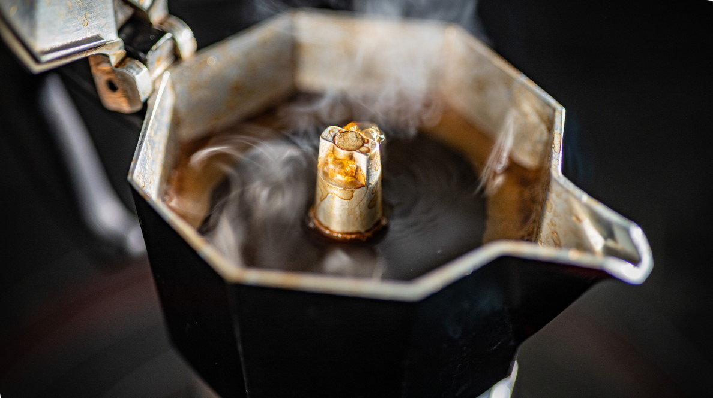

DIFFICULTY
Easy
CUISINE
Italian
PREP TIME
3'
TOTAL TIME
Idem
> Other
Not so bitter! Using a moka
Brewing coffee on a moka is easy, everybody does it. Everybody seems to be, however, used to the burnt and bitter flavour. This recipe explains how I do it for the tiramisù since I'm not used to coffee and I really notice the bitterness otherwise. Being less bitter makes it drinkable with less sugar too. The moka is a relatively new invention, in the name of a city in Yemen renowned for its coffee: Mocha.
Origin
1933 Piedmont, Italy. (Alfonso Bialetti)
Ingredients for 30 servings
- Coarsely ground coffee
Utensils
Kitchen pot
Steps
- Fill moka with water until the valve element, pour it on a kitchen pot and boil.
- While it's heating, fill the filter with coarsely ground coffee.
- Once it's boiling, pour on the moka container, quickly place filter, close the moka (it will be hot, grab a kitchen towel for it) and put it on the stove at medium heat.
- As soon as it starts gurgling (expelling air mixed with the extract) pour on a recipient.
The aim is to extract coffee while keeping it at low temperature as much as possible: this is why we brew it with already hot water or why we remove when it finishes.
Variations
!
NUTRITION FACTS
Per serving
Calories0 kcal
Fat0 g
Carbohydrates0 g
Sugar0 g
Protein0 g
CULINARY TIP
Make sure the moka is clean. Old coffee stains don't add any good flavour.